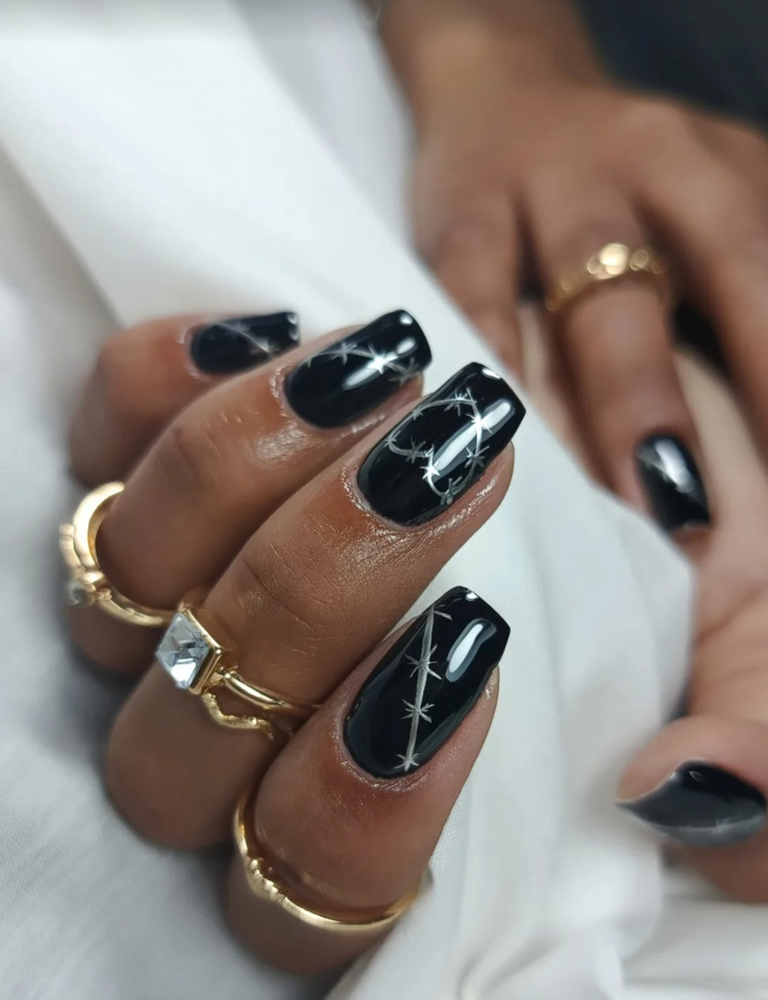

Esmaltado Semipermanente
Color y brillo impecable por semanas.
Ideal si tenés uñas naturales sanas y buscás un acabado prolijo y duradero sin modificar el largo.
- Duración: 2 a 3 semanas.
- Ideal para: Uñas fuertes o cortas que solo necesitan color.